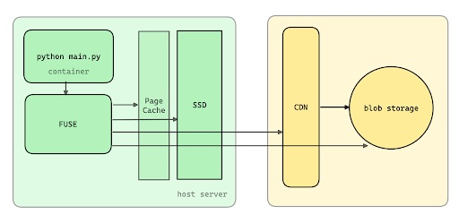
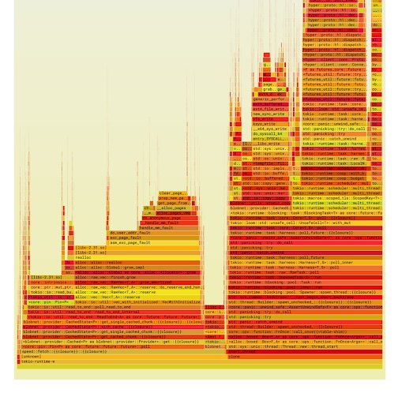

Fast, lazy container loading in Modal.com
Modal is a serverless GPU cloud platform in the same spirit as AWS Lambda but with a few differences: 1. we incorporate GPUs and 2. our approach to application development and deployment is designed to be both fast and developer-friendly.
In a previous article, we covered the generalities of how we launch containers fast in Modal. In this post, we will go into more depth on fast, lazy container loading.
The container loading problem
Let’s look at a typical Python machine learning prediction inference function that leverages the BERT language model.
import torch
import transformers
def predict(prompt: str) -> list[dict]:
device = "cuda" if torch.cuda.is_available() else "cpu"
model = transformers.pipeline(
"fill-mask",
model="bert-base-uncased",
device=device
)
return model(prompt)The function takes in a text prompt, processes it through the BERT model, and ultimately generates a text response accompanied by metadata.
It’s running on an approximately 8 GiB “fat container” running Python 3.11, and the BERT model itself is packaged as a 512 MiB .safetensors file.
When we initially started building Modal, loading this .safetensors file would have taken almost a full second. Considering that models have only gotten larger—now often in the tens of gigabytes—an 800 megabyte per second throughput wasn’t going to cut it.
Fortunately, we’ve made significant strides in improving performance. Our current throughput is about 2.5 gigabytes per second, allowing us to load the 512 MiB .safetensors file in just 200 milliseconds from disk cache and about 300 milliseconds from the network.
In the rest of this blog post, we cover the specific improvements we made to accomplish this.
The container loading problem
In order to understand the container loading problem, you have to first understand the concept of the container file system. A container cannot operate without this file system, which is typically implemented as an overlay mount on the host system. The overlay filesystem uses some kernel functionality that allows for the management of changes made to a read-only lower directory, where the container image resides.
Here’s a breakdown of how it works:
overlay on /mnt/overlay type overlay (
rw,
relaltime,
lowerdir=/tmp/tmph45cav46/lower,
upperdir=/tmp/tmph45cav46/upper,
workdir=/tmp/tmph45cav46/work
)In this setup, the lower directory contains the immutable parts of the container image, and it must remain read-only. When you run the container, you can make changes—referred to as mutations—but if you stop and restart the container, those mutations shouldn’t affect the original image.
This is where the overlay filesystem shines: it allows these changes to happen in an upper directory, which you can discard after the container is done using them. Essentially, you keep the lower directory intact for reuse, maintaining your deployment model without the confusion of unwanted changes persisting across container restarts.
The container loading problem
When we talk about container loading, there are two fundamental approaches: eager and lazy.
The eager approach is typical for tools like Docker and Kubernetes. It’s the go-to method when you’re getting started with containerization. This approach aims to load everything upfront, which, while reliable, can be less flexible and efficient, especially under certain pressures.
In contrast, the lazy approach, which is adopted by Modal and services like AWS Lambda, takes a different route. Instead of loading everything at once, it initializes components as they are needed. This can significantly improve efficiency and responsiveness, particularly in scenarios where resources are at a premium or need to be managed dynamically.
Docker/K8s loading approach
In the eager approach, cold-starting our fat Python container involves the following steps:
- The container image is a fat stack of N tarballs (gzipped).
- You will download N tarballs over the network concurrently at about 2 GiB/s.
- Decompression of the gzipped tarballs happens single-threaded at around 80 MiB/s.
- Finally, you need to unpack these into a root filesystem directory on the host.
On a Kubernetes node, this process reveals itself in the directory:
/var/lib/containerd/io.containerd.snapshotter.v1.overlayfs/When you start up a fresh host, it lacks the necessary container image file system, resulting in a need to download and decompress these layers. While the download can be relatively quick with proper resource allocation, the decompression process becomes the bottleneck since it is single-threaded and slower than the download speed. For larger images—like an 8GB uncompressed image such as those provided by Nvidia—this can lead to about a minute spent on decompression.
Once decompressed, you still have to layout the host filesystem, write files, and set metadata, adding to the time it takes to start the container. You have to complete these unpacking steps before launching the container, as the unpacked layers become part of the lower directory in the overlay filesystem mount.
This loading mechanism suits typical Kubernetes clusters, where applications are less frequently started and stopped. In contrast, serverless multi-tenant platforms demand quick container startups and may experience more frequent node changes, resulting in a completely different cold-starting profile than what you see in a standard Kubernetes environment.
Lazy loading approach
The lazy loading approach is very different. A container image serves as an index; essentially, it’s a data structure that holds all the files and metadata about those files. This index is around five megabytes and can be loaded in one to 100 milliseconds, depending on whether we’re grabbing it from memory, disk, or over the network. It can subsequently be FUSE mounted in about 2 milliseconds.
Since it’s a small amount of data, the index contains only pointers to the actual file data that must already exist somewhere in your container loading system—in the case of Modal, it’s typically content addressed.
This turns a 1 minute process into something that takes 100 ms or less.
Note: If you’re not familiar with FUSE, it’s a “Filesystem in Userspace.” This allows you to create a flexible file server that can respond to system calls made by a guest process on a host. These calls go through the kernel to be served by your FUSE server, which is free to operate however it wants, as long as it appropriately responds to the syscall. For example, if I showed you a Python program that wanted to open files, that open request would be routed into the kernel. The kernel then dispatches a FUSE message to the FUSE server, which takes care of handling that message.
How do we load the data?
But note that we don’t load data, only metadata! And there’s no free lunch. So how do we load the file data?
Our architecture begins with a Python main container that interacts with a FUSE file server. The FUSE server plays a critical role as it connects to a page cache. When the required data isn’t in the page cache, the system checks the SSD storage, which is followed by the CDN (Content Delivery Network) for any necessary data. As a last resort, it reaches out to blob storage, but we aim to minimize hits to blob storage to just the rarest occasions. If we’re frequently accessing blob storage, it indicates that we’ve missed optimizing the process somewhere along the line.

The performance of lazy loading is closely tied to where we retrieve our file data from. Here’s a breakdown of the read latencies, throughputs, and costs associated with different caching tiers:
| System | Read Latency | Read Throughput | Cost ($USD/GiB/month) |
|---|---|---|---|
| Memory | 1-100 ns | 10-40 GiB/s | $2.0 |
| SSD | 100 μs | 4 GiB/s | $0.10 |
| AZ Cache Server | 1 ms | 10 GiB/s | $0.15* |
| Regional CDN | 100 ms | 3-10 GiB/s | - |
| Blob Storage (e.g. S3) | 200 ms | 3-10 GiB/s | $0.015 |
When a read request comes in, we aim to serve it from the fastest available option. Ideally, this is memory, where latency can be as low as 100 nanoseconds and throughput can be high, though this comes at a significant operational cost. If the data isn’t found in memory—likely in the page cache—we may have to go to the SSD. In a fresh host scenario, the SSD might not even have the file, sending us to the next tier—an AZ cache server. This is a mere millisecond away with decent throughput, but if we continue down the hierarchy, we hit the regional CDN, where latencies jump to 100 milliseconds. At this point, we’re straying into problematic territory. The final fallback is blob storage, where you could be looking at latencies around 200 milliseconds. If you’re making read requests that all resolve to this tier, the time it takes for a Python process to spin up could stretch into hours.
While the situation may seem tough—especially as highlighted by the sluggish performance of certain tiers— there is a path forward.
Caching
Caching is one solution. Many of our customers are using Modal for AI/ML stuff and there’s a lot of overlap.
In our lazy loading system, we effectively load Python 3.11 and the relevant libraries just once, making them accessible to multiple containers as they initialize. The first time you run a container, it accesses the necessary files from disk. Once that happens, you can store those files in your page cache, and from that point on, you’re in a good spot.
The diagram illustrates the overlap between different frameworks, such as PyTorch and DreamBooth, and shows that there are over 8,700 common files. This is a significant advantage since the overlap means we minimize redundant loads.
It’s also important to highlight that many of the files in a typical container image, especially larger ones—like those weighing in at around 8 GB when compressed—are essentially junk that your process will never read. Loading unnecessary files is a waste of resources. For example, the eagle loading system often pulls in locale data from the /etc directory, even when your application won’t utilize that information. This inefficiency can slow down processes and should be avoided whenever possible.
Use big hosts
Another thing we learned: don’t use small hosts. If you use a small host from a cloud provider, you’ll quickly find that you lack the necessary bandwidth in both your SSD and network connections to achieve peak performance.
To keep everything running smoothly, your network performance should well exceed your storage performance. Avoid network bottlenecks by aiming for at least 4 GB/s download speeds. Keep in mind that cloud providers often have limits on single flows – for instance, even if your instance has a maximum advertised speed of 20 gigabits down, they may throttle that to just 5 gigabits for a single flow. It’s crucial to use multiple flows (source IP, port, destination IP, protocol) to truly maximize your network throughput.
This leads to the question, “Why is it so slow?” It could be because all that network capacity is being squandered on a single flow. Stack several SSDs together using RAID 0 for better throughput. Remember, the SSD tiers should not be about durability; reserve that for the origin tier to prevent data loss.
As for our setup, we’ve found a specific AWS instance that we utilize quite a bit. It has eight GPU devices and can handle around 5 GB/s down speeds, along with ample SSD storage.
FUSE settings
Another area where we did a lot of optimization work was the FUSE settings. Starting out, we saw a peak read speed of only 800 MB/s, which was far below the potential of the NVMe SSD and network capabilities.
Read-ahead settings
After extensive testing, we upped our read-ahead settings significantly. Read-ahead in the kernel allows it to request future pages when it gets a request for a specific page. By default, Linux sets this at 128 KB – which is merely a handful of 4 KB pages. For high-latency situations, this default is insufficient and could cause a fallback to the network. We’ve set our read-ahead to 32 MB, which has worked wonders for us.
However, be cautious. You can’t simply crank up this value indiscriminately. We once shipped a version with a read-ahead set at 1 GB, which resulted in disastrous latency issues in production. If the kernel is instructed to read a gigabyte of data on a single request, it doesn’t do well.
FUSE request size
Another thing you can think about is FUSE request size. Each READ request from the kernel to the userspace FUSE server has a size. Our original setting was 128 KB. Our goal was to increase that to 1 MB for peak throughput—fewer, larger requests are more efficient. Unfortunately, we couldn’t push this higher without enabling direct IO.
It’s worth noting that enabling direct IO poses a challenge: it disables the page cache. Any write with direct IO goes straight past the page cache, and any read does the same. Personally, I appreciate the page cache—it works really well for coalescing reads and serving a larger amount of memory. It’s a good idea to keep that in play.
Congestion threshold and background threads
The congestion and max background settings are some other knobs to tune.
The FUSE system in the kernel effectively processes requests using either a synchronous path or in the background. This dual approach is essential; some operations require immediate attention, while others can afford to be buffered. For standard read requests, we opt for buffering.
When configuring a FUSE server for a specific read and write pattern, one might not change the default configuration settings. However, since our system is a read-only file system and heavily read-oriented, we must maximize the queues in the background. This ensures that we don’t throttle the guest system, especially if they’re experiencing a backlog with their read requests. Under these circumstances, only synchronous requests will proceed smoothly. An example of a synchronous request could involve fetching file metadata.
Don’t blow up your heap!

We did some profiling work and found significant memory allocation issues. The flame graph indicated that about 50% of our samples were tied up in memory allocation, which is clearly not good for throughput. As it turned out, maintaining a large heap was detrimental; reducing the heap size while processing large files resulted in improved throughput.
The root cause of our heap expansion was related to how we handled reads over the network. Our goal was to cache data efficiently so that future reads would access the page cache and disk instead of hitting the network every time. However, this required us to store a substantial amount of file data in memory, ultimately leading to a bloated heap.
The solution we implemented involved deferring disk writes and streamlining memory usage. By keeping the heap small and streaming data directly from the network to the guest process without holding it in memory, we could significantly enhance performance. We estimated this adjustment increased throughput by around 100 to 200 MiB/s.
Summary
To summarize, we took a focused approach on the performance of the FUSE file service, specifically targeting its read throughput when dealing with single files. Key strategies included going big on SSD and network capabilities, implementing techniques like read-ahead and prefetching, and balancing read and write I/O operations.
With these implemented changes and some additional tweaks we haven’t explored, we saw throughput go up to approximately 2.5 GiB/s, enabling us to load a 512 MiB .safetensors file in just 200 milliseconds from disk cache and about 300 milliseconds from the network.
This article is adapted from a talk given by Jonathan Belotti at the NYC Systems meetup in August 2024. You can watch the full talk below.